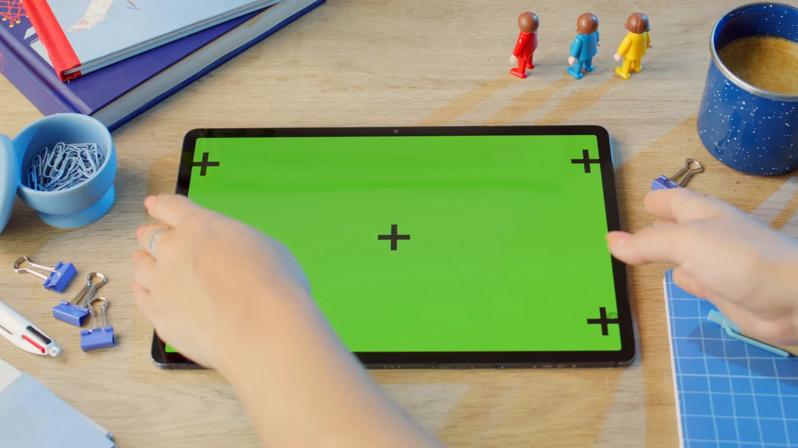

V1
Object-centric perception and replay
The original pipeline, documented with a short bottle sequence and four replayable historical query records.
Persistent object- and event-centric memory for evidence-grounded video question answering.
将视频观察转化为可持续检索的视觉记忆，并让回答回到原始画面证据。
RecallVision explores how observations from ordinary videos can be converted into reusable visual memory. Rather than answering every question by processing a video from the beginning, the system records scene, object and event information, associates observations with source frames, and retrieves the stored evidence for later questions.
The project has evolved through three implementations: an object-centric perception and replay baseline, an integrated local application with reviewable memory, and a persistent visual-memory application with evidence checks and cached natural-language answers. Each version has its own implementation and evaluation boundary.
The workflow separates video analysis from later question answering. Stored observations can be inspected and reused, while answers remain connected to the frames that support them.
Sampled frames provide visual observations of scenes, objects and interactions.
Object, scene and event records are organized with timestamps and source references.
Natural-language questions retrieve stored records and link answers to supporting frames.
The diagram describes the project direction across versions. Individual implementations differ in their memory schema, review process and retrieval capabilities.
The V3 showcase includes three short source-video cases. Open the case explorer to inspect recorded observations, answers and supporting frames.

The versions document the project's progression. They should be read as separate implementations with different capabilities and evaluation protocols.
The original pipeline, documented with a short bottle sequence and four replayable historical query records.
Video import, object-memory generation, identity and event review, and evidence-gated historical queries.
A local application with scene, entity and event hypotheses, frame-local evidence checks, SQLite memory and cached answers.
The website presents project documentation and recorded demonstrations; it does not run model inference. V1 and V2 have separate frozen evaluations. V3 is presented through three short real-video cases and a local demo-memory pack. Results across versions are not directly comparable.
Perception errors, uncertain object identities and incomplete event evidence remain important limitations. The project keeps these boundaries visible rather than treating every stored hypothesis as ground truth.